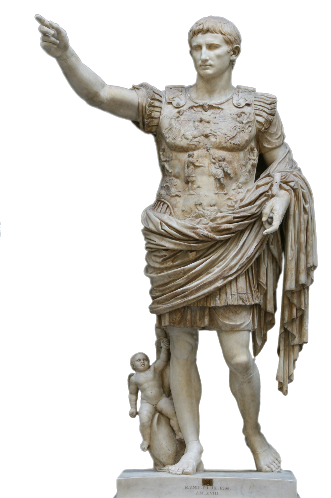
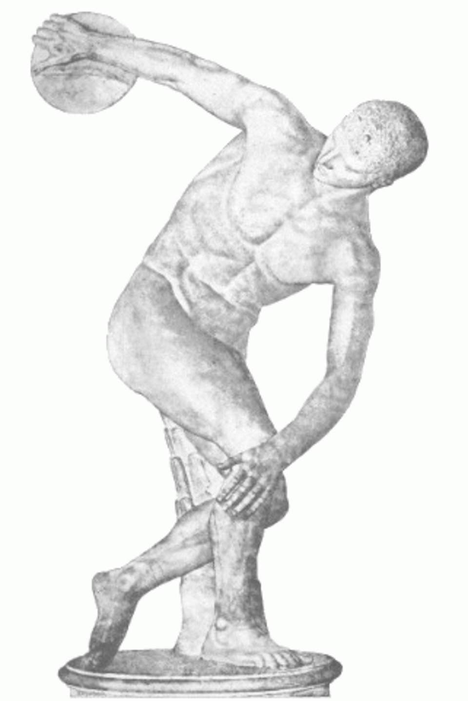

INRI Project, Dijtal Sosyal Bilimler alanında Türkiye'de faaliyet gösteren bir projedir.
Amacımız Türkiye'de bulunan
tarihi eserlerin, belgelerin ve yerlerin dijitalleştirilmesi ve görüntülenmeye hazır bir şekilde paylaşılmasıdır.
PROJELERİMİZ
INRI Archive